Welcome to Inductory Workbook On Translation
The Inductory Workbook on Translation is a thorough reference for aspiring and professional translators, with an emphasis on improving their abilities and technical knowledge. Chapter 1 discusses the fundamental concepts and scope of translation, emphasizing its significance in bridging cultural and language divides. The second chapter goes into the fundamentals of translating and interpreting, offering insights into efficient cross-linguistic communication. Chapter 3 stresses linguistic correctness and technical skill, providing learners with the tools they need to produce exact and high-quality translations. Finally, Chapter 4 delves into advanced procedures and editing processes, honing the art of translation to produce more subtle and compelling outcomes. This workbook is a must-have for anybody aspiring to be a successful translator.
About Us
We provide resources and support for translation students.
Chapter Selection
Welcome to the Chapters section! Here you'll discover materials to help you improve your translation abilities. Chapter 1 addresses the fundamentals of translation, while Chapter 2 discusses key interpretation tactics. Chapter 3 covers linguistic correctness and technical abilities, while Chapter 4 discusses advanced procedures and editing practices. Dive in and hone your skills!
Chapter 1: Introduction to Translation
This chapter introduces the fundamental concepts of translation and interpretation.
Translation is the process of converting text from one language to another.
-
Definition of Translation
Translation, much like powerful patent translation, as you might have heard, is the art of converting written words from one language to another. It consists of two types of languages, viz. source language and target language(s). The former is the language of the original documents, while the latter is the language in which the documents need to be translated. So, when you approach a translation vendor, you will be asked about the source and target languages. Upon translation, you will receive a similar copy of the original files in a different language (target languages).
You can use this translated copy to reach a global audience, communicate, and achieve your end objective. -
Translation Exactly Meaning
Translation is the transfer of written text from one language -the source- to another language -the target. Although translation and interpretation mostly used interchangeably, by actual definition, translation refers to the written language, and interpretation refers to the spoken language.
The purpose of translation is to convey the intent of a message and the original tone, keeping in mind regional and cultural differences between the target and source languages. Nowadays, translation is a sector in which a lot of activity is happening; all this is due to the increasing globalization of companies. A large number of people live in a country who can't speak their local language fluently.
Of course, all this bodes well for the translation industry. There are different types of translation that may be required, and each of them is unique in its own way with its own set of requirements and processes. In case you are doing businesses at the international level, it would be handy to hire translation services near me that understand your specific needs and can cater to those. The seasoned translation service professionals who work either as a part of some company or as an individual can provide the exact translation service one has expected from them.- Interpretation Meaning
Interpretation is the oral rendition in a target language of spoken or signed communication in another language that maintains conveys the meaning, tone, and intent of the message accurately and appropriately for an audience. Unlike translation, which deals with written text, interpretation is done more or less simultaneously and thus usually occurs in the presence of the speaker—usually in real-time during a conference, meeting, courtroom, or medical appointment setting.
- Type of Interpretation
There are 14 types of interpretations, each of which will be explained along with examples to provide better understanding
- Simultaneous Interpretation
- Consecutive Interpretation
- Whispered Interpretation
- Relay Interpretation
- Liaison Interpretation
- Sign Language Interpretation
- Phone Interpretation
- Video Remote Interpretation (VRI)
- Escort Interpretation
- Judicial or Court Interpretation
- Medical Interpretation
- Media Interpretation
- Cultural Interpretation
- Remote Simultaneous Interpretation (RSI)
The interpreter listens to a speaker while interpreting the message into a target language almost simultaneously in order to be in tune with the speaker. Typical situations where this type of interpretation is used include:
• Conference settings
• Multilingual meetings
• Broadcast settings
Requires special equipment: headphones and microphones.The speaker allows pauses between utterances, generally one complete sentence or segment at a time, to allow time for the interpreter to produce his own spoken rendition. Typical situations are bilateral meetings, legal settings-for example, court interpretations-and medical appointments-with a doctor and his/her patients.
- Most often requires the taking of notes to ensure accuracy.- The interpreter is whispering the translation right into the ear of one or two listeners.
- Applicable to small groups where one or two persons require interpretation.
- No equipment is required but this practice is physically tiring for the interpreter.- Requires the use of an intermediary language when direct interpretation is not possible.
- For example, from Korean to English and then from English into French.
- Common practice during multilingual events when there are rare language combinations.- The interpreting enables communication either informally or formally between two
- Applies to business negotiations, interviews, and community services.- Translates spoken language into sign language for Deaf or hard-of-hearing people, and vice versa.
- Applied in educational, legal, medical, and cultural arenas.
- Certification and cultural sensitivity are also required.- The interpreters work remotely and facilitate conversations over the phone.
- It is common in customer service, medical, and legal applications.
- It allows access to urgent interpretation.- Interpreters provide both visual and audio interpretations via video conferencing platforms.
- Application areas include telemedicine, legal depositions, and business meetings.- The interpreter accompanies a person or group of people during their travel or on-site visits.
- Common in tours, cultural exchange, and business trips.• Legal: Specialized interpreting involving trials, depositions, or any other witness testimony.
• Requires knowledge of legal terminology with absolute confidentiality a must.• Provides a means for health workers to communicate with all limited English proficient patients.
• Brings about the accuracy of medical history, diagnosis, and treatment plans.• Translates live broadcasts, interviews, or news conferences in real-time television or radio.
•Requires far more fluency and expressiveness, needing also to convey tone and emotion.• Fills the gap between two cultures beyond the simple words in language; that messages are conveyed in a culturally appropriate manner and sound.- Interpretation is done via video, online, via systems like Zoom or an RSI tool.
- The most common virtual conferences are webinars. - Interpretation Meaning
CHAPTER 2: Foundations of Translation and Interpreting
This chapter will provide an overview of basic concepts in translation and community interpreting, along with an introduction to translation ethics.
There are various types of translation, each serving a unique purpose. Literary translation focuses on translating literature, while technical translation deals with specialized texts.
-
Introduction to Advanced Translation Central Issues
Equivalence is some kind of ‘sameness’ or ‘similarity’ that ST and TT translation share at various levels, such as in linguistic, cultural, textual, or a combination of all levels.
THE CONCEPT OF EQUIVALENCE BY VARIOUS SCHOLARS
Equivalence is inevitably involved in any theory of translation that can be understood by the comparison of various texts in terms of form and meaning.
Some of the reason on why is it hard to achieve the exact equivalent in translation is because:
Same Source Text can be interpreted differently by the same person on different occasions.
Subjectivity plays an important role in the translator’s interpretation of the ST and the translator’s translation strategies. 3)
The target audience expectation may play an important role in terms of equivalent effect.VINAY AND DARBELNET (1958)ROMAN JAKOBSON (1959)EQUIVALENCE AS TRANSLATION PROCEDURE
➡️Vinay and Darlbenet introduce two translation strategies: Direct translation and oblique translation
➡️The term ‘equivalence’ is used to a particular translation task that requires translating a text from one language to another by ‘‘using completely different stylistic and structural methods’’ in an attempt to create an effect that is the same for the two languages
➡️Equivalence is suitable when it comes to translating idioms and proverbs.
➡️Example: two peas in a pod ➡️➡️➡️➡️➡️➡️➡️ Pelanduk dua serupa
➡️According to Vinay and Darbelnet ‘it is in the situation of the SL text that translators have to look for a solution”NIDA AND TABER (1964/1969)EQUIVALENCE IN DIFFERENCE
➡️ There are three type of translation which are:
➡️Intralingual translation (within one language)
➡️Interlingual translation (between two language)
➡️Intersemiotic (Between sign systems)
➡️Jakobson considers equivalence as “the cardinal problem of language and pivotal concern of linguistic”
➡️Translation is possible regardless syntactical, cultural and lexical differences between two language.CATFORD (1965)
➡️Nida’s theory is from two major source namely:
➡️Semantic and pragmatic
➡️Chomsky’s generative-transformational model
➡️Nida proposed two types of equivalence which are formal equivalence and dynamic equivalence.
➡️Formal equivalence: Focus on the message in both form and content
➡️Kianbakht (2020) stated that reproduction of f ST linguistics form with that emphasize on the fidelity to the lexical items and grammatical structures of the original text
➡️Example:
Les Copaque Animation “Puteri”
ST: Tuan Puteri
TT: Princess
➡️Dynamic equivalence: Taking account the target audience. Text will be translated in a way that make more sense
➡️Jiang (2020) stated that dynamic equivalence emphasizes the information receptor’s response
➡️Reflected in a TT to adapt the function of the original ST to suit the target context
➡️Example:
From Les Copaque animation “Puteri”
ST: Tuan Hamba
TT: You
ST: Ayahanda
TT: Father
ST: Tuan Hamba
TT: Your HighnessHOUSE (1977)
➡️Catford defines equivalence in two categories: Category shift and level shift
➡️Level shift: SL item at one linguistic level has TL equivalent at a different level
➡️ Category shift: divided into structure shift which involves the changes in the
➡️(a) Structure shift: Changes at grammar level
➡️(b) Class-shift: Changes in class (eg: adjective into noun)
➡️(c) Unit-shift: Changes in rank
➡️(d) Intra-system shift: “SL and TL possess systems which approximately correspond formally as to their constitution, but when translation involves selection of a non-corresponding term in the TL system”NEWMARK (1981)SEMANTIC AND PRAGMATIC EQUIVALENCE
➡️A TT has a function equivalent to the ST.
➡️There are two types overt translation and covert translation
➡️Overt translation: It looks like translation (terang-terangan)
➡️Example:
➡️ST: The Memoirs of Geisha
➡️Source Text: “...Mameha-san, I don’t know what has led you to this decision...”
(Arthur, p. 161).
➡️Target Text:“...Mameha-san, saya tidak tahu apa yang mempengaruhi keputusanmu...”
(Abdul Latif, p.170).
➡️Covert translation: Does not read like a translation (terselindung). The translated text should be functionally equivalent to ST)
➡️Focus more on new culture:
➡️Source Text: “...Okonkwo brought the wine and they began to drink”
(Achebe, p. 97).
➡️Target Text“...Okonkwo mengambil tuak itu dan mereka mulai minum”
(Nazel, p. 141).
➡️ST: Things Fall Apart by Chinua Achebe.KOLLER (1979/1981)SEMANTIC AND COMMUNOCATIVE
➡️Semantic: Translate as closely to the semantic and syntactic structures of the second language allow.
➡️Communicative: Produce effect as close as possible to the effect Source Text reader
➡️Semantic translation: Focus on form of SL
➡️Communicative: Evoke the same effect or response on the target text reader.BAKER (1992)➡️Proposed five type of equivalence:
➡️Denotative equivalence: Equivalence of the extralinguistic content of a text.
➡️Connotative equivalence: Lexical choices by translator
➡️Text-normative equivalence: Text-types
➡️Pragmatic equivalence: Receiver-oriented
➡️Formal equivalence relating to the form and aesthetics of the textLEVEL OF LOSS➡️Equivalence at word and above word level: Translator need to pay attention to single words as well as units smaller than the word (morpheme).
➡️Grammatical equivalence: Grammatical categories that different languages possess.
➡️Textual equivalence: Equivalence between ST and TT with reference to cohesion and information. Three main factor: the target audience, the purpose of the translation and the text type.
➡️Pragmatic equivalence. This type of equivalence focuses on implicature.
➡️TRANSLATION LOSSLoss occur on all language levels: Morphological, Syntactic, Textual and Stylistic
➡️CATEGORY OF LOSSInevitable Loss
Avertable Loss
➡️ Loss in translation occurs when a translator faces difficulties in the process of translation with certain terms that have no equivalents in the TLTRANSLATION GAIN➡️Morphological: Word formation is a good mark of gain or loss in translation
➡️Phonological Level: Loss in regard of consonant
➡️Semantic level: Loss in translation occur when the denotative or connotative meaning is lost of distortedDEFINITION➡️DEFINITION:Occurs when the translated text conveys additional meaning or emotional resonance that enhances understanding or appreciation.
➡️ASPECT OF TRANSLATION GAIN:
Clarity: - Translators may use more precise terms in the target language that better convey the original message.
Cultural relevance: - Translator may choose culturally relevant terms or expressions that can give better understanding to the target audience
Enhance the contextual of the text: - Translation may include additional context or explanation to clarify the meaningSTRATEGY TO OVERCOME UNTRANSLATABILITY➡️The degree of difficulty of translation depends on their nature, as well as on the translator’s abilities to translate certain part in source text.
➡️Property of text that has no equivalence in target text.
➡️Two type of untranslatability by Catford (1965)
a).Linguistic untranslatability : Occurs when there are no grammatical or syntactic equivalents in the TL
b).Cultural untranslatability : The absence in the TL culture of a relevant situational feature of SL text.➡️Adaptation
A translation procedure where translator replace the ST culture with a corresponding culture in TT.
➡️Borrowing
Translator uses word or expression from ST directly to TT.
➡️Calque
Translating SL word into TL word-by-word.
➡️Paraphrase
Translator replace a word in the ST by group of expression in the TT.
➡️Translator Note
Add footnote to give explanation on certain word.- TRANSLATION STUDIES AND INTERDISCIPLINARITY
DISCIPLINE, INTERDISCIPLINE OR SUB-DISCIPLINE?
Translation studies has evolved into a recognizable academic discipline that connects with various fields such as linguistics, cultural studies, and communication.
This interdisciplinary nature emphasizes the complexity of translation as not merely a linguistic activity but a cultural and social one.MARY SNELL-HORNBY’S INTEGRATED APPROACH
➡️ Translation studies has been seen as a sub-discipline of linguistics or comparative linguistics.
➡️ Translation studies has evolved into a recognizable academic discipline that connects with various fields such as linguistics, cultural studies, and communication.
➡️ This interdisciplinary nature emphasizes the complexity of translation as not merely a linguistic activity but a cultural and social one. This perspective explores how translation affects and is affected by cultural context and not just linguistic context only.INTERDISCIPLINARY APPROACH


 THE FUTURE OF TRANSLATION STUDIES
THE FUTURE OF TRANSLATION STUDIES TRANSLATION AS LANGUAGING
TRANSLATION AS LANGUAGING TRANSLATION AS A LANGUAGE LEARNING METHOD
TRANSLATION AS A LANGUAGE LEARNING METHOD CONCLUSION
CONCLUSION

- TRANSLATION STUDIES AND INTERDISCIPLINARITY
CHAPTER 3: Language Accuracy and Technical Skills in Translation
This chapter focuses on the linguistic aspects of translation, including grammar, terminology, and the importance of accuracy.
Translation techniques vary based on the text type and target audience. Techniques like adaptation and localization ensure that the translated text resonates with the target culture.
-
PUNCTUATION
semicolon,
THE BASIC GUIDELINES
comma
full stop
colon
hyphen
exclamation mark
etc.IF YOU' RE NOT CAREFUL... Clarity and Accuracy
Clarity and Accuracy Explanation Punctuation
Explanation Punctuation PUNCTUATION Errors
PUNCTUATION Errors
 Punctuation Can Change Meaning
Punctuation Can Change Meaning CONCLUSION
CONCLUSION


- EQUIVALENCE ABOVE WORD LEVEL COLLOCATION
INTRODUCTION
WHAT IS COLLOCATION?
Equivalence above the word level refers to the way phrases or expressions (collocations) can carry meaning that is more than just the sum of their individual words.
Understanding collocations is important because it often reflect cultural aspect and idiomatic usage that may not be translated directly.
For example, "make a decision" is a standard collocation in English, and a direct translation into another language may not have the same naturalness or idiomatic quality as the English language.TYPE OF COLLOCATION? COLLOCATION WITH RANGE
COLLOCATION WITH RANGE COLLOCATION WITH MARKEDNESS
COLLOCATION WITH MARKEDNESS COLLOCATION AND REGISTER
COLLOCATION AND REGISTER
 COLLOCATION AND REGISTER
COLLOCATION AND REGISTER
 COLLOCATION ISSUES IN TRANSLATION
COLLOCATION ISSUES IN TRANSLATION


- GRAMMAR ERRORS
NOUNSPROPER NOUNS COMMON NOUNS
COMMON NOUNS COLLECTIVE NOUNS
COLLECTIVE NOUNS MATERIAL NOUN & ABSTRACT NOUN
MATERIAL NOUN & ABSTRACT NOUN CLASSIFICATION OF NOUNS
CLASSIFICATION OF NOUNS Countable Noun
Countable Noun CLASSIFICATION OF NOUNS
CLASSIFICATION OF NOUNS UNCONTABLE NOUNS
UNCONTABLE NOUNS
 NOUNS AND CASE
NOUNS AND CASE NOUNS AND GENDER
NOUNS AND GENDER
 PERSONIFICATION OF NON LIVING THINGS
PERSONIFICATION OF NON LIVING THINGS SUBJECT-VERB AGREEMENT EXERCISES
SUBJECT-VERB AGREEMENT EXERCISES
 ANSWERS: SUBJECT-VERB AGREEMENT
ANSWERS: SUBJECT-VERB AGREEMENT COMMONLY CONFUSED PAIR
COMMONLY CONFUSED PAIR FIND MISTAKES
FIND MISTAKES ANSWERS
ANSWERS


- SYNTATIC ERRORS
Sytax and Idiom (problems)Syntatic change and variability


- Terminology Editing
Terminology that editors commonly useProofreading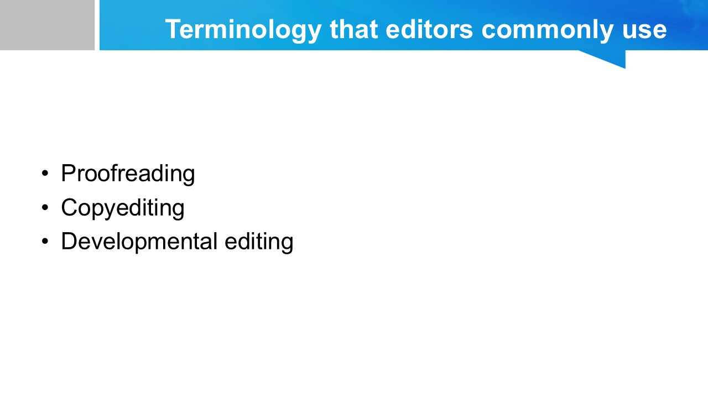
Copyediting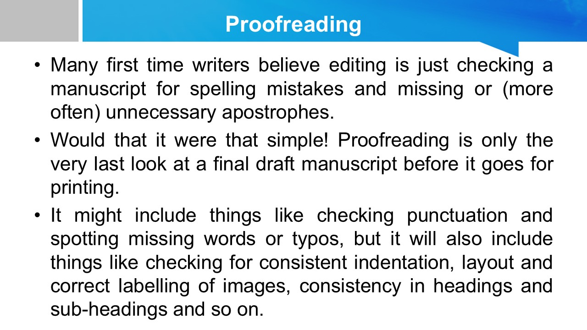 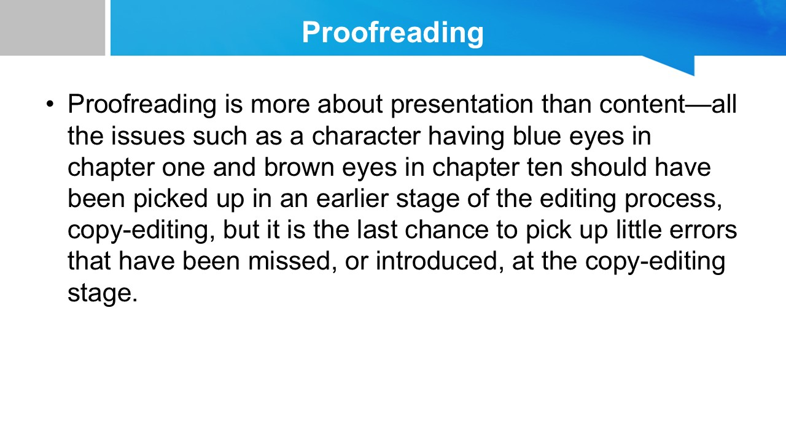
Copy-edit scope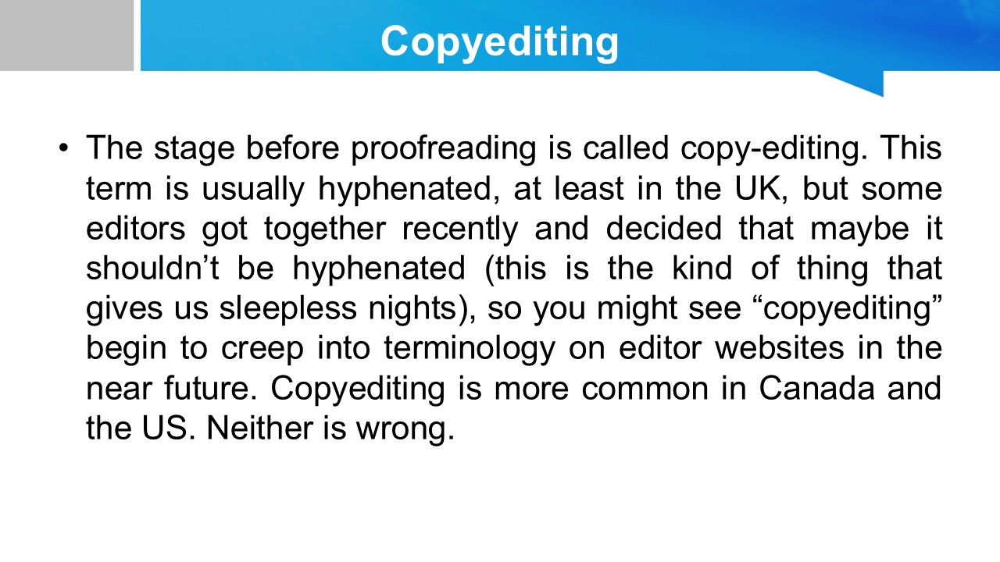 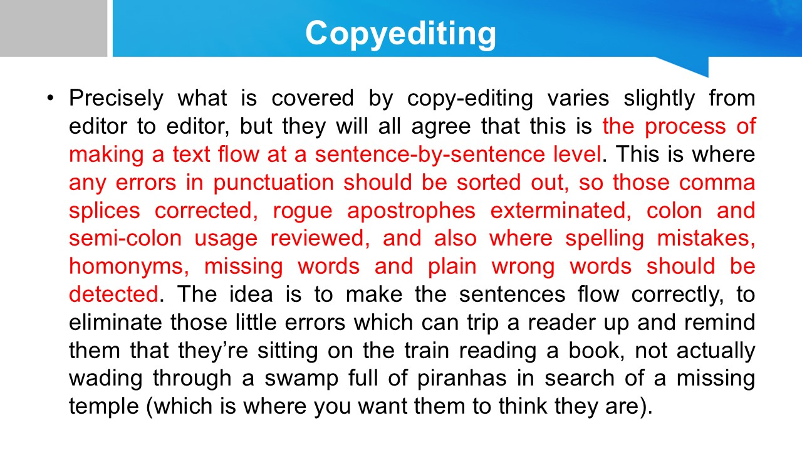
Hard and soft copy-edits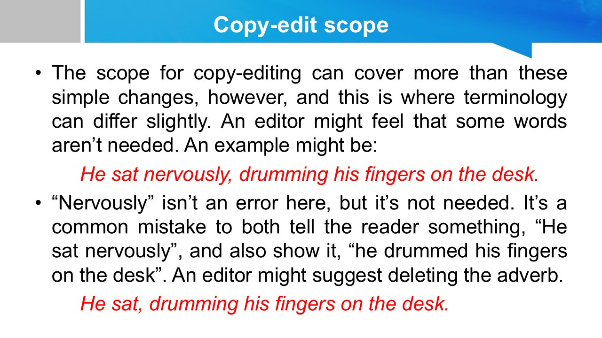 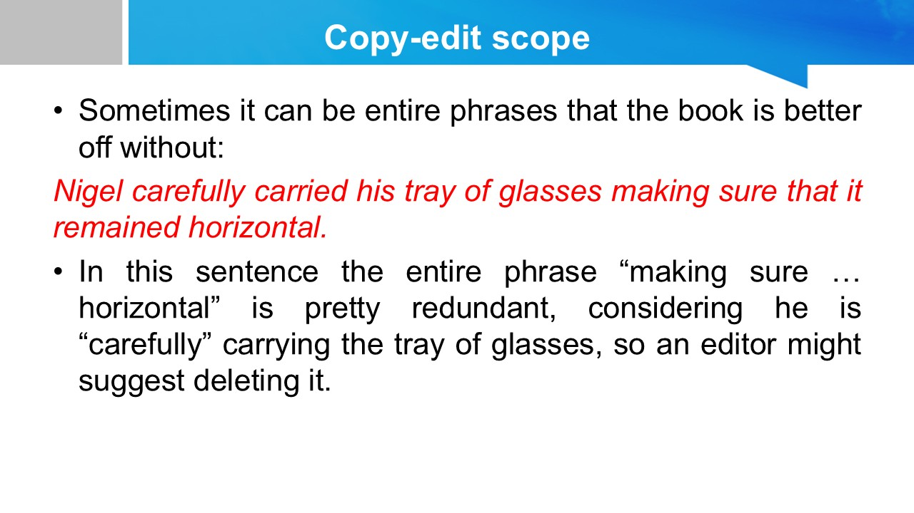 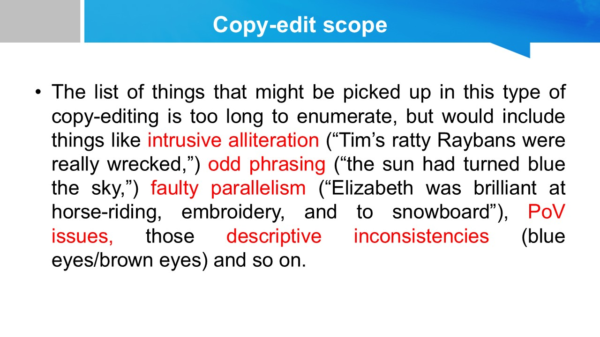
Developmental editing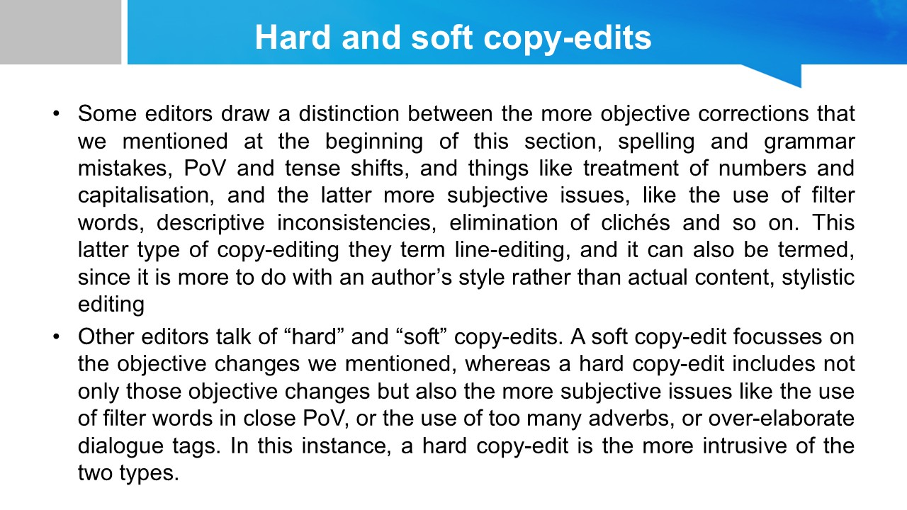
Summary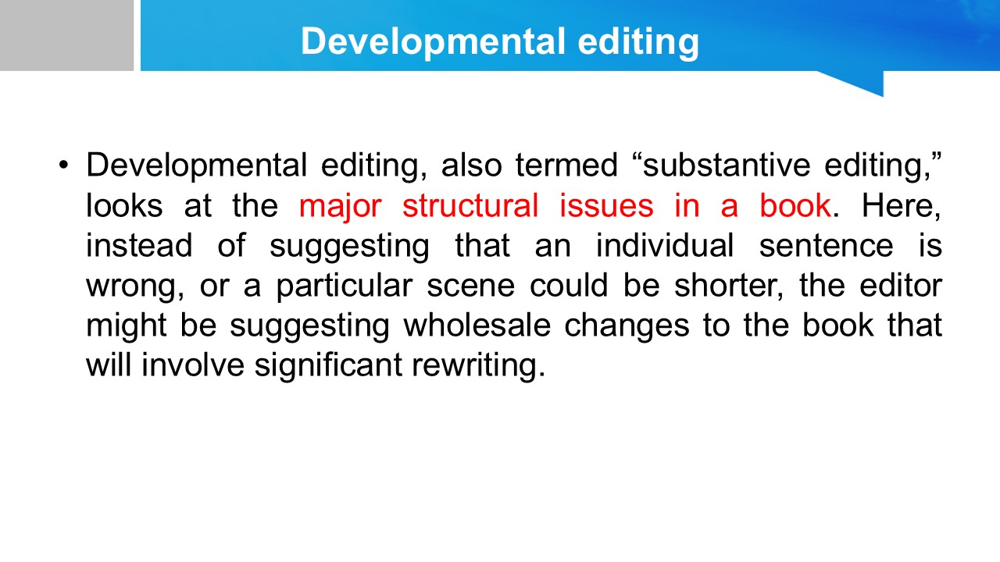 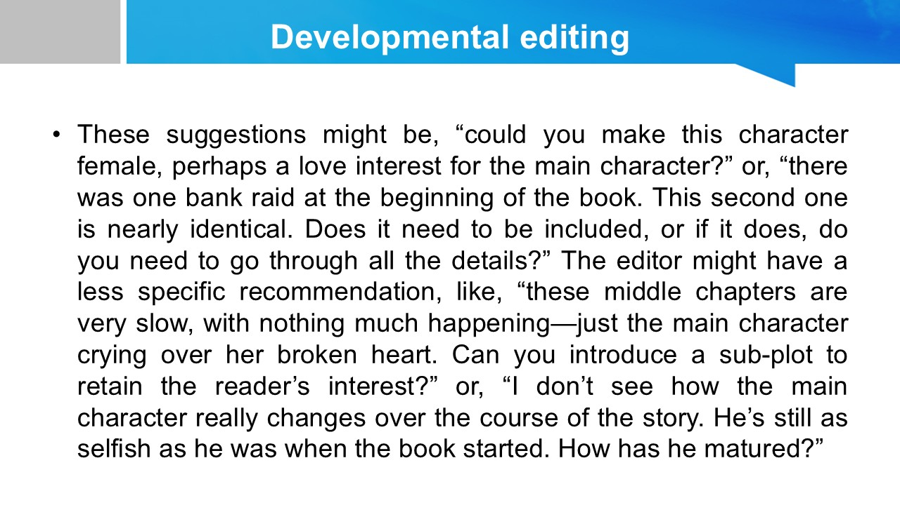 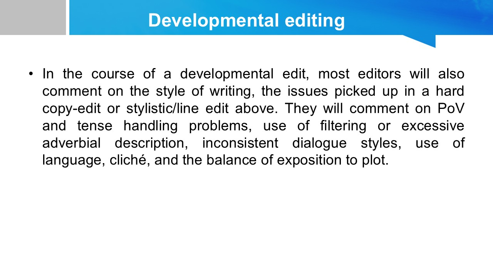
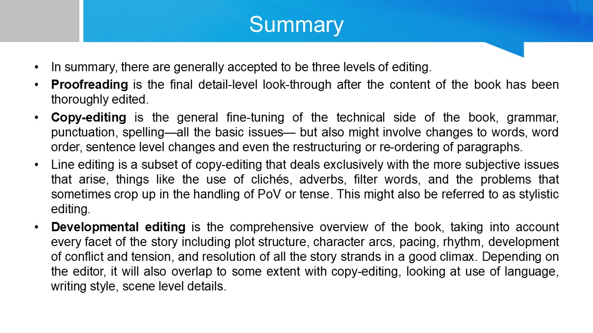
sChapter 4: Advanced Translation Techniques and Editing Practices
This chapter covers the refinement of translation skills through editing and advanced techniques, including the use of machine translation.
Translators often face challenges such as cultural nuances, idiomatic expressions, and maintaining the original text's tone and style.
-
COPYWRITING
What Is COPYWRITINGThe role copywriters
 Copywriters needed in Advertising?
Copywriters needed in Advertising? Where you find copywriters?
Where you find copywriters? Copywriters as communicators
Copywriters as communicators Writing with purpose
Writing with purpose Understanding your product
Understanding your product Knowing your audience
Knowing your audience Mastering the language
Mastering the language Sharpening your style
Sharpening your style Rules and restrictions
Rules and restrictions Creating effective copy
Creating effective copy Advertising around the world
Advertising around the world CONCLUSION
CONCLUSION

- Editing and Proofreading In Translation
What Is EditingWhat is Proofreading and Explanation Strategies of the proofreading process
Strategies of the proofreading process


- MACHINE TRANSLATION POST-EDITING
What is machine translation post-editing?What is machine translation? Is post-editing the same as review?
Is post-editing the same as review? Post-editing process
Post-editing process The importance of post-editing machine translation
The importance of post-editing machine translation Tool that aim to advance the theory and practice of post-editing
Tool that aim to advance the theory and practice of post-editing CONCLUSION
CONCLUSION

- Editing and Proofreading In Translation
- EQUIVALENCE ABOVE WORD LEVEL COLLOCATION